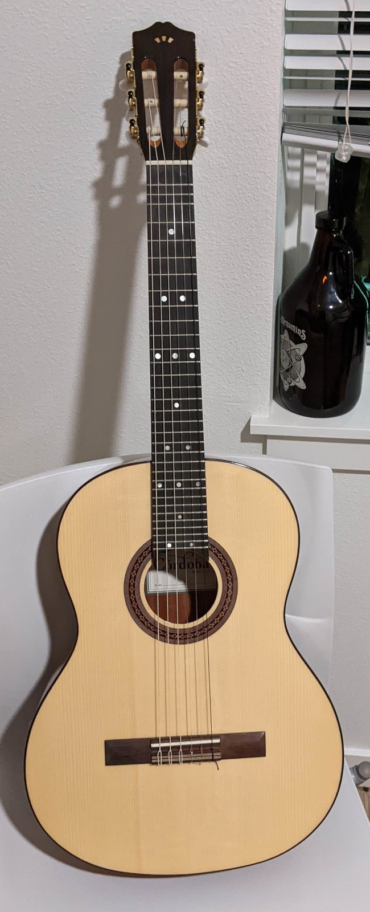

It’s about time I talk about some of my musical instruments, and I want to start with my Kite guitar.

Now, you might be wondering what a Kite guitar is. It’s a microtonal guitar where the fret spacing is 2 steps of 41-tone equal temperament. There can also be one or more frets that add the steps halfway in between at or near the end of the fretboard (my guitar has one). The strings are also generally all tuned in major thirds from each other (technically, downmajor thirds, but I’ll get to that distinction later on). Since this interval is 13 steps of 41-equal, some strings have the steps that others don’t, so on a full-scale guitar with 6 strings, there are over 2 and a half octaves without a single missing step. Also, there’s an official Kite guitar website.41-tone equal temperament may sound like an arbitrary choice for a tuning, but it’s actually much better at approximating the harmonic series than many other equal temperaments of similar size or smaller. For example, all harmonics up to 16 except for perfect powers of 2 (octaves) are approximated better in 41-equal than they are in 12-equal.
41-equal also works especially well on a guitar because of the Kite layout. Multiple flavors of major and minor chords can be played on 3 adjacent strings with the finger positions close together, and the octave is 3 strings up and 1 fret towards the bridge.
In 41-equal, there are different “major” and “minor” intervals. The downminor interval (at 9 steps) represents the just interval 7/6, which can help give a darker, moodier quality to a chord. The mid-minor interval (at 10 steps) represents 13/11 or 32/27 and is closest to the familiar 300-cent minor third, giving it a more generic quality. The upminor third (at 11 steps) represents 6/5, giving it a brighter character. The downmajor third (at 13 steps) represents 5/4 and is the spacing between each string on a Kite guitar. It has a sweeter and mellower sound than the familiar 400-cent major third, which is what the mid-major third (at 14 steps) gets closest to. The upmajor third (at 15 steps) represents 9/7 and has a more tense quality to its sound. There’s also the neutral third (at 12 steps) which represents 11/9 or 16/13, and may sound somewhat unpalatable to the Western listener, but it shows up in Arabic maqams and classical Thai scales (although they tend to use tunings other than 41-equal).
The guitar I have is a Cordoba C5 which I bought new and came with a 12-tone fretboard. That fretboard was removed and replaced with a laser-cut fretboard of the same color, and the frets were added and the fretboard was installed. The guitar was at the luthier’s for months and the whole transformation cost about double the amount I spent on the guitar in the first place, but now I have a microtonal guitar that I can just pick up and play instead of signing into a computer and using a virtual software instrument.
Kite Giedraitis, the guy who the type of guitar was named after and one of its discoverers, actually lives in the same city I do, and he helped with this process, acting in part as a middleman between me and both the fretboard make and Kerry, the luthier who installed the fretboard. He was there to make sure things were done the way they were supposed to be.
Anyway, it’s a neat instrument in my collection, and I’m glad to own such a rare type of guitar.